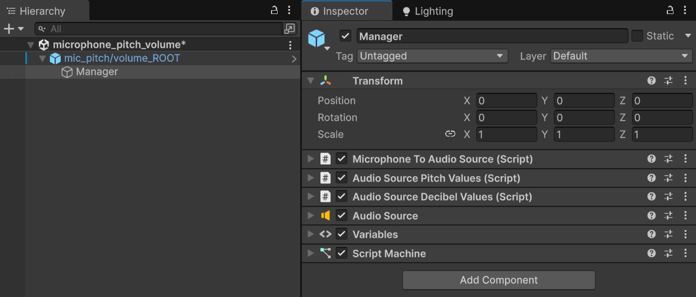
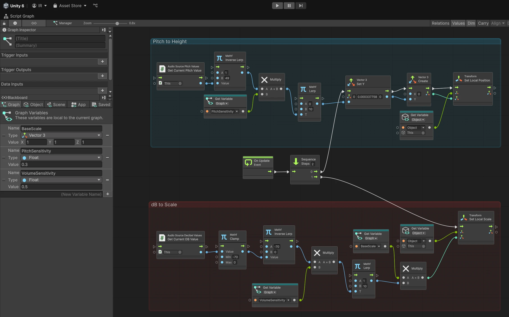
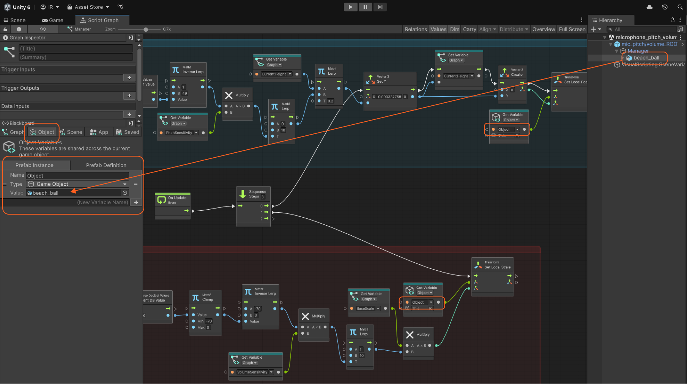

Microphone Values
Meadow allows you to access live pitch and decibel (dB) through the Microphone to Audio Source feature. This makes it easy to create interactions using real-time audio input from the device’s microphone.
To use Microphone Values you need the XREF Experience Builder Package installed (see How to Install Optional Packages)
Components

Create a Manager GameObject and add the following components:
- Microphone To Audio Source (Script)
- Audio Source Pitch Values (Script)
- Audio Source Decibel Values
- Audio Source
- Script Machine
Nodes
Use the following nodes
- [Audio Source Pitch Values: Get Current Pitch Values]
- [Audio Source Decibel Values: Get Current DB Values]
These nodes provide a float number that you can use to create logic in the OnUpdate event.
Depending on your application, you may need mathematical nodes to adjust pitch and dB values for your desired outcome, such as Clamp, Lerp, Inverse Lerp, or basic operations like Add and Multiply.
Example

In this example:
- The pitch value controls the height of an object.
- The dB value increases its scale.
After adapting the values, multiply them by a Sensitivity variable to fine-tune control. Use Lerp to limit the range (for example, keep height between 0 and 10).
Optional:
- Create a BaseScale variable to store an object’s original size. Adjust its
Vector3values to match proportions (recommended default: x1, y1, z1). - Define the Object variable and assign it to the object you want to interact with in the scene.

Pitch/dB Values - Usage Idea
You can use pitch and decibel inputs in many ways, such as triggering visual or behavioral changes like modifying textures, colors, or animations.
For example, you could make a bird fly when player whistles and dynamically change its color based on decibel variations.
Nodes not appearing in the graph?
If the requiered nodes don’t show up when you try to add them, proceed as follows:
- Go to
Edit > Project Settings > Visual Scripting > Node Library. - If you don’t see
XREF.ExperienceBuilderlisted: - Click the + icon at the bottom right.
- Search for XREF.ExperienceBuilder.
- Press Enter to add it.
- Then click Regenerate Nodes.